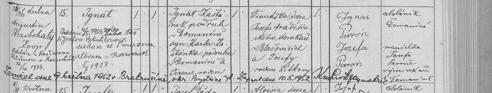

Text z matriky a překlad
Přepis originálu
[Čas narození a křtu; křtil] 25/26 dubna [1878]; Augustin Brzobohatý, koop. [Č. d.] 15 [Jméno] Ignát – chlapec, manželský. Bába táž [Františka Pöringerová, Bystřice č. 191]. [Přípisky] Oddán 4/5 1903 zde s Josefou Vykutilovou. Sezdán se Šmerdovou (?) Albínou v Rozsochách 5/7 1923. Oddán s Vaší[…]ovou Růženou v Rozsochách 16/10 1934. Zemřel dne 9. května 1952 v Bratrušíně, okr. Bystřice n. P., zapsal dne 10. 5. 1952 [podpis matrikáře]. [Otec] Ignát Kaštánek, podruh v Domaníně, syn Karla Kaštánka, podruha v Domaníně, a Terezie rodem […] (přepsáno přípiskem) [Matka] Františka, dcera Josefa Hradešínského, domkáře v Blažovicích, a Josefy rodem Žilkovy [Kmotři] Ignac Peron (Paroň), celoláník v Domaníně; Josefa Peron, manželka Josefa Paroně, výminkáře v Domaníně
Překlad
Ignác (Ignát) se narodil 25. dubna 1878 v Domaníně čp. 15 a druhý den ho pokřtil kooperátor Augustin Brzobohatý. Byl manželský. Otec: Ignác Kaštánek, podruh v Domaníně, syn Karla Kaštánka, podruha v Domaníně, a Terezie (rodné příjmení přepsáno pozdějším přípiskem). Matka: Františka, dcera Josefa Hradešínského, domkáře v Blažovicích, a Josefy roz. Žilkové. Kmotři: Ignác Paroň, celoláník v Domaníně, a Josefa Paroňová, manželka výměnkáře Josefa Paroně. Pozdější přípisky: oženil se 4. 5. 1903 v Bystřici s Josefou Vykutilovou, 5. 7. 1923 v Rozsochách s Albínou Šmerdovou (?) a 16. 10. 1934 v Rozsochách s Růženou Vaší…ovou (?). Zemřel 9. května 1952 v Bratrušíně (okres Bystřice nad Pernštejnem).